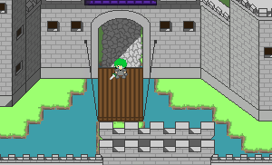
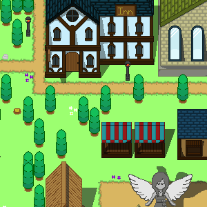
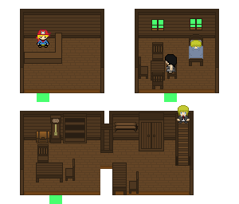
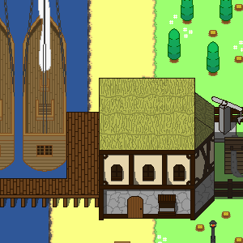
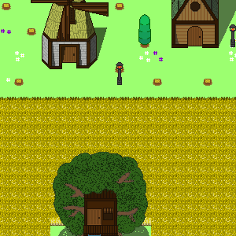

Wayward Sail
An open world sailing ORPG with resource gathering and building
Wayward Sail is Work-in-progress ORPG developing by Jackie and Kevin. We currently do not have a planned release date.
The game is setted in the 1600s on the fictional land ocean world of Fyxentia where it is ruled by the Goddess Elaina. A long time ago,
mankind waged wars, destroying one another for fames and greeds. Angered by their actions, Elaina flooded the world, leaving only a few of
her loyal subjects survived on a few small islands before disppearing into her heaven. Thousands of years had passed and mankind had learned
their mistakes, what was then rumbles are now big cities and ports across the land. Things seem to be going great for everyone, until recently.
There has been a lot of earthquake, and it is rumored that far, far away, new islands appeared where there was water before. Will you, explorers
and heroes, take the leads and colonize places where no man has gone before?
We plan to make the world expand as the game progress. Outside of the default islands, new islands created (via a Goddess point system) will allow players to harvest resources and build their own home and town (even city and kingdom!)
As mentioned, each island will have specific set of resources that can be gathered. Using different type of resources can improve certain aspect of an items or just make it look cooler. There will be a trading system implemented, more on that below
We plan to make a sailing system so that you can explore around or trade goods from islands to islands. There will be various type of ships each with different advantages and disadvantages. Yes there will be sea combats along with land combats/grapphling as well
Because of the scope of the game, I think manually gathering all the resources or sail your ships from islands to islands would be a pain to do. So instead we will create a controllable NPC system where you can hire NPC as your party member and order them to do labor tasks for you
